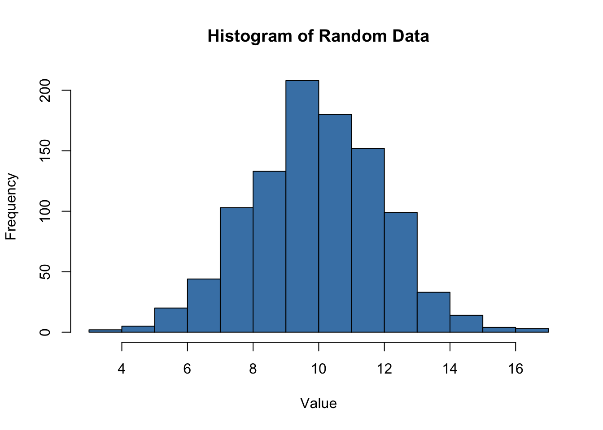
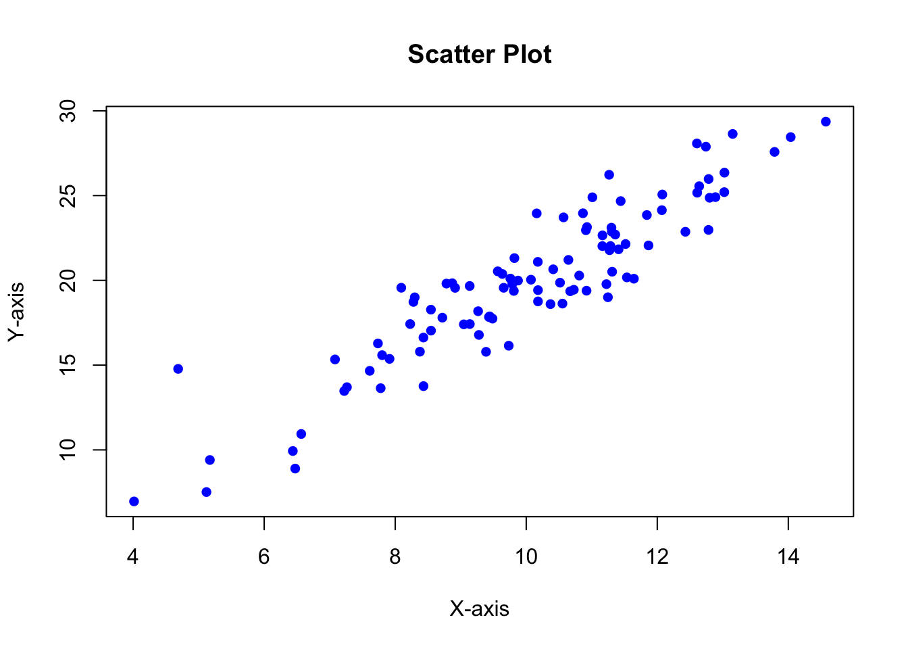
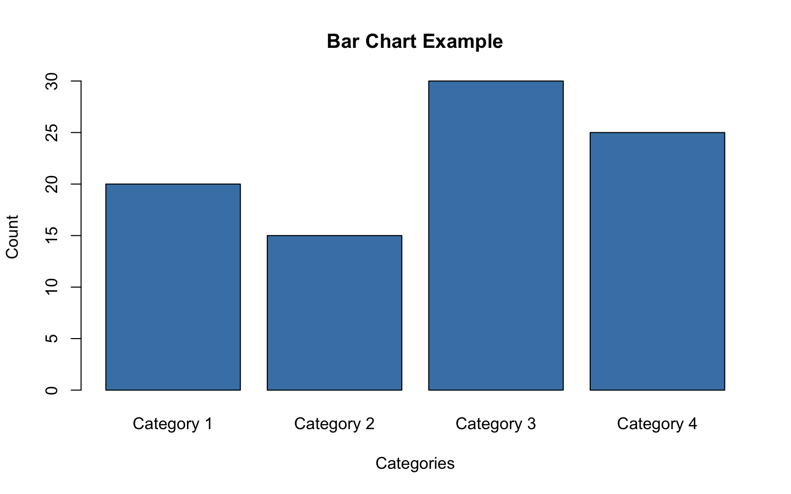
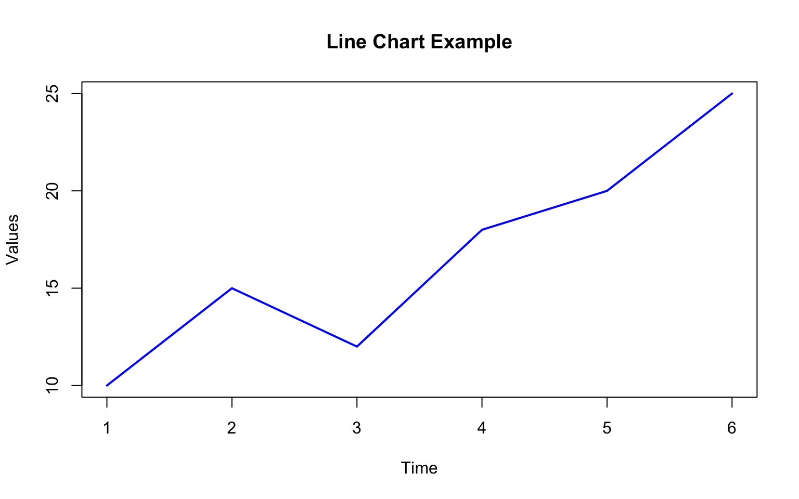

In this topic, you will learn about :
Plotting using base package (graphics) focus on Histogram, Scatter diagram, Bar chart, Box plot, and Line chart
A histogram is a graphical representation of the distribution of a continuous or discrete variable. It shows the frequency or count of data points falling into specific bins or intervals. In R, you can create a histogram using the base graphics package.
Function: hist( )
Syntax:
hist(x, breaks = "Sturges", col = "steelblue", main = "Histogram", xlab = "X-axis label",
ylab = "Frequency")Example: Creating a Histogram
# Generate random data
set.seed(42)
data <- rnorm(1000, mean = 10, sd = 2)
# Create a histogram
hist(data, breaks = "Sturges", col = "steelblue", main = "Histogram of Random Data", xlab = "Value", ylab = "Frequency")
In this example, we generated 1000 random data points from a normal distribution with mean 10 and standard deviation 2. We then created a histogram using the hist( ) function and specified the number of bins using the “Sturges” method. The histogram is plotted with blue bars and has a title and axis labels.
Remember to replace data with your actual data vector in the hist( ) function. The histogram will provide insights into the distribution and central tendency of your data, making it a valuable tool for exploratory data analysis.
Scatter Plot using Base Package in R Programming
A scatter plot is a graphical representation of the relationship between two continuous variables. It is a powerful visualization tool to understand the correlation and distribution of data points. In R, you can create a scatter plot using the base graphics package.
Function: plot( )
Syntax:
plot(x, y, main = "Scatter Plot", xlab = "X-axis label", ylab = "Y-axis label",
col = "blue", pch = 16)Example: Creating a Scatter Plot
# Generate random data
set.seed(42)
x <- rnorm(100, mean = 10, sd = 2)
y <- 2 * x + rnorm(100, mean = 0, sd = 2)
# Create a scatter plot
plot(x, y, main = "Scatter Plot", xlab = "X-axis", ylab = "Y-axis", col = "blue", pch = 16)
In this example, we generated two sets of random data x and y. The relationship between x and y is linear, with y being approximately twice the value of x with some random noise. We then created a scatter plot using the plot( ) function, plotting the data points with blue dots.
Remember to replace x and y with your actual data vectors in the plot( ) function. Scatter plots are valuable for visualizing the correlation between two variables and identifying patterns or trends in the data.
Bar Chart using Base Package in R Programming
A bar chart (or bar plot) is a graphical representation of categorical data, where the height or length of each bar corresponds to the frequency or count of data in each category. In R, you can create a bar chart using the base graphics package.
Function: barplot( )
Syntax:
barplot(height, names.arg = NULL, col = "steelblue", main = "Bar Chart", xlab = "X-axis label",
ylab = "Y-axis label")Example: Creating a Bar Chart
# Sample data
categories <- c("Category 1", "Category 2", "Category 3", "Category 4")
counts <- c(20, 15, 30, 25)
# Create a bar chart
barplot(counts, names.arg = categories, col = "steelblue", main = "Bar Chart Example", xlab = "Categories", ylab = "Count")
In this example, we have sample data representing four categories and their corresponding counts. We used the barplot( ) function to create a bar chart with the heights of the bars determined by the counts and labeled each bar with its respective category.
Remember to replace categories and counts with your actual data vectors in the barplot( ) function. Bar charts are helpful in visualizing categorical data and comparing the frequency or count of different categories.
Box Plot using Base Package in R Programming
A box plot (also known as a box-and-whisker plot) is a graphical representation of the distribution of numerical data through quartiles. It provides a visual summary of the data’s central tendency, spread, and presence of outliers. In R, you can create a box plot using the base graphics package.
Function: boxplot()
Syntax:
boxplot(x, horizontal = FALSE, main = "Box Plot", xlab = "X-axis label",
ylab = "Y-axis label")Example: Creating a Box Plot
# Sample data
data <- list(
group1 = c(10, 15, 18, 20, 25, 30),
group2 = c(5, 8, 12, 15, 22, 28, 30, 35)
)
# Create a box plot
boxplot(data, horizontal = FALSE, main = "Box Plot Example", xlab = "Groups", ylab = "Values")In this example, we have two groups of sample data stored in a list data. Each group represents a set of numerical values. We used the boxplot( ) function to create a box plot, displaying the distribution of each group’s data through the quartiles.
Remember to replace data with your actual data vectors or list in the boxplot( ) function. Box plots are useful for visualizing the spread and distribution of data, identifying outliers, and comparing multiple groups or datasets.
Line Chart using Base Package in R Programming
A line chart (also known as a line plot or line graph) is a graphical representation of data points connected by straight lines. It is particularly useful for showing the trend or pattern in continuous data over time or any ordered variable. In R, you can create a line chart using the base graphics package.
Function: plot( )
Syntax:
plot(x, y, type = "l", col = "blue", lwd = 2, main = "Line Chart", xlab = "X-axis label",
ylab = "Y-axis label")Example: Creating a Line Chart
# Sample data
time <- c(1, 2, 3, 4, 5, 6)
values <- c(10, 15, 12, 18, 20, 25)
# Create a line chart
plot(time, values, type = "l", col = "blue", lwd = 2, main = "Line Chart Example", xlab = "Time", ylab = "Values")
In this example, we have sample data for time (x-axis) and corresponding values (y-axis). We used the plot( ) function with type = “l” to create a line chart, where the data points are connected with a blue line.
Remember to replace time and values with your actual data vectors in the plot( ) function. Line charts are valuable for visualizing trends, patterns, and changes over time or any ordered variable. They are especially useful for time series data or data with a natural order.